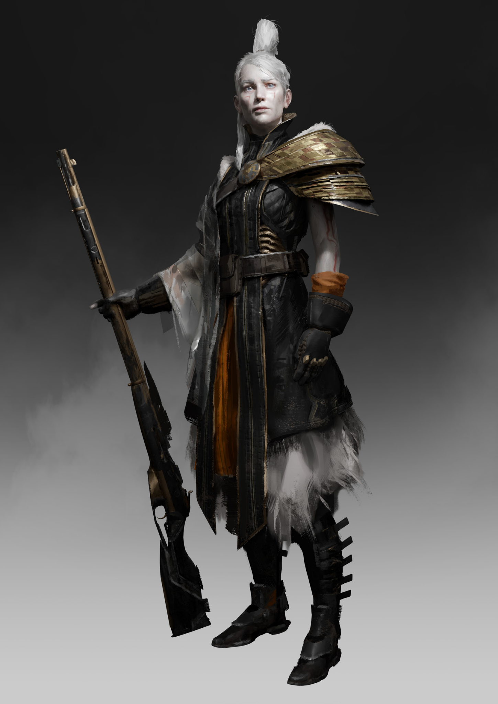

CLAN DOSSIER
Exalters
Exalt must rise again.
Exalters pp. 27–29

FREE SPIRIT
Briefing
“Across the mountain range that splits the Crow’s nest in two, I met a people unlike any other. They were not to be bought off by gold, nor were they interested in wealth, despite them living in a city that rivaled Tripol’s best districts. They dressed in garments of the rich, yet provided for everyone around, and I found no soul driven by greed or tempted by mortal sin. All they lacked was humor, to make them likable.”
From the Sacred Journal of the Libyan; Document of the Great Crossing; 2162
Credo
Once you were kings, destined to shape the course of history, guiding humanity toward the light of unity and independence, washed clean from the immortal sins of the past, a branch of civilization so bright and healthy that it bore only golden fruits. Today, barely anyone even remembers your once proud name. You hide among filthy peasants, sleep next door to conniving Liquans, trade with oppressed Stukov merchants, and are forced to admit coarse Anabaptists to your sacred sanctums. They all spit on your heritage, eye you up like cattle, completely unable to grasp the glory of your lineage. Your kind is forgotten, stamped down into the dirt, its universal achievements scratched from the surface of the Earth and cast into oblivion.
Now Judges stride along roads built by your people and Chroniclers feast on your inventions, while Scrappers split the remains of your empire and sell it off as construction material. Savages nest in your former home, multiplying like rabid animals and defecating on the broken throne of your crumbled grandeur.
The world has abandoned you. You’re the only one left who keeps the memory of what once was, and how it was supposed to be. If you could just reach out and reclaim the lost territory, guide your people back into the ruins to rise and rebuild, then there would be no strife, no Justitian, no Protectorate, no Cathedral City – only Free Spirit.
Fractured
Hair matted white with zinc oxide, features chalked, all in remembrance of the holy union with the Palers that once intermingled with the Exaltian bloodlines. But your Clan is fractured into a myriad of splinters, and nothing will piece the great image back together if you don’t do it yourself. A century ago you were legion, today, your people are merely a couple of thousands strong. Too few to change the burden of defeat, but enough to reignite the spirit of revolution. Wherever the gilded city once held dominion, survivors remained, carving out a niche under the radar of their old enemies. You must find and reintegrate them into the corpus of your Clan, to feed its dwindling numbers.
You know they’re holding out: some bold and proud like the exclave of Liqua, some subtle and hidden in faraway bases somewhere in Hybrispania, Franka, and the Balkhan, the fire of Exalt still smoldering all across Europe. Around crackling campfires, bathed in the flickering light of ancient electrical lamps, or under the pool of moonlight seeping into an underground cave, stories of the great golden empire are whispered between remaining family members. Tales of wondrous exploits, towering buildings, victorious armies, all serving precisely one purpose. To fuel the driving principle of the humanitarian imperative, and to never allow for its flame to be extinguished. Exalt must rise again.
THE CLAN
Hierarchy & Ranks
Select any rank to read its prerequisites, effect, and equipment.
FREE SPIRIT
The Apex
In the golden age, the Exalters had no need for the rigid, well-defined rank structures that characterized many of the Cults and Clans of the world. Instead, they achieved the ultimate goal of the Free Spirit program – a flat, shifting hierarchy where everyone naturally settled into the role that best suited them, a people united by their individuality, never submitting to another based on the intangible concept of “authority.” With the Grindworks out of reach, though, this potential was lost, and it became clear that the Exalters would need structure to survive. Even so, they didn’t lose track of their once-great nature. They remembered the Apex.
To become an Apex, the Exalter must shed the rigid mindset of hierarchy and understand the true nature of being a Free Spirited individual, a state which can only be achieved after many successful embossings in the Grindworks. His Allies, Authority, and Resources Backgrounds rise to (4) and cannot decrease below this point, and he has +2D to all interactions with his own people. Additionally, due to his new mindset brought on by dozens of Conceptual shifts or many experiences in a variety of Constellations, he can easily merge with any Alignment – even if he isn’t fully in Affinity. Whenever an Apex joins a group following any Alignment, he does not contribute or receive Aversion penalties, even if his Concept is in Aversion. However, he additionally does not contribute to Affinity bonuses.